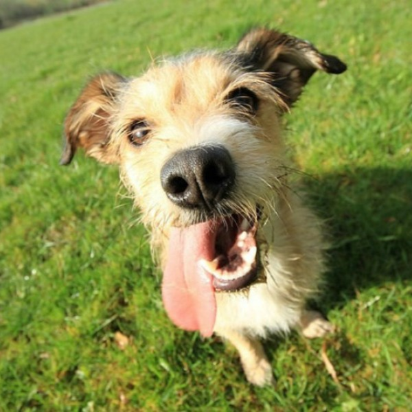

Coco
Perro disponible en adopción
Características
- Raza: Poodle (Caniche)
- Sexo: Hembra
- Edad: 5 años
- Tamaño: Mediano
Comportamiento
Coco es una perra inteligente y activa. Es muy cariñosa con su familia y se adapta bien a diferentes situaciones. Es fácil de entrenar y le gusta aprender nuevos trucos. Coco disfruta de jugar tanto en interiores como al aire libre.
Salud
Está al día con todas sus vacunas y no tiene ninguna enfermedad conocida.
Ubicación
Ciudad de México